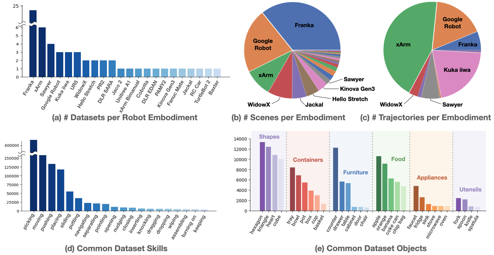

Open X-Embodiment: Robotic Learning Datasets and RT-X Models
Open X-Embodiment Collaboration
Authors listed in alphabetical order.
For technical questions, please file a bug at the github repo. For any other inquiries, please email open-x-embodiment@googlegroups.com.
Contributing datasets: if you are interested in contributing datasets to the Open X-Embodiment dataset, please fill out the Dataset Enrollment Form.
RT-2-X API Interest Form
Abstract
Large, high-capacity models trained on diverse datasets have shown remarkable successes on efficiently tackling downstream applications. In domains from NLP to Computer Vision, this has led to a consolidation of pretrained models, with general pretrained backbones serving as a starting point for many applications. Can such a consolidation happen in robotics? Conventionally, robotic learning methods train a separate model for every application, every robot, and even every environment. Can we instead train “generalist” X-robot policy that can be adapted efficiently to new robots, tasks, and environments? In this paper, we provide datasets in standardized data formats and models to make it possible to explore this possibility in the context of robotic manipulation, alongside experimental results that provide an example of effective X-robot policies. We assemble a dataset from 22 different robots collected through a collaboration between 21 institutions, demonstrating 527 skills (160266 tasks). We show that a high-capacity model trained on this data, which we call RT-X, exhibits positive transfer and improves the capabilities of multiple robots by leveraging experience from other platforms.
move red pepper to tray
pick ice cream
move red pepper to A
Dataset Overview

We introduce the Open X-Embodiment Dataset, the largest open-source real robot dataset to date. It contains 1M+ real robot trajectories spanning 22 robot embodiments, from single robot arms to bi-manual robots and quadrupeds.
The dataset was constructed by pooling 60 existing robot datasets from 34 robotic research labs around the world. Our analysis shows that the number of visually distinct scenes is well-distributed across different robot embodiments and that the dataset includes a wide range of common behaviors and household objects. For a detailed listing of all included datasets, see this Google Sheet.
Model Overview

We train two models on the robotics data mixture: (1) RT-1, an efficient Transformer-based architecture designed for robotic control, and (2) RT-2, a large vision-language model co-fine-tuned to output robot actions as natural language tokens.
Both models output robot actions represented with respect to the robot gripper frame. The robot action is a 7-dimensional vector consisting of x, y, z, roll, pitch, yaw, and gripper opening or the rates of these quantities. For data sets where some of these dimensions are not exercised by the robot, during training, we set the value of the corresponding dimensions to zero.
We refer to the RT-1 model trained using the robotic data mixture as RT-1-X, and the RT-2 model trained using the robotic data mixture as RT-2-X.
Results
RT-1-X evaluation on in-distribution skills
At UC Berkeley (RAIL)
At University of Freiburg (AiS)
At NYU (CILVR)
At UC Berkeley (AUTOLab)
At Stanford (IRIS)
At USC (CLVR)

Original Method refers to the model developed by the creators of the dataset trained only on that respective dataset. The Original Method constitutes a reasonable baseline insofar as it can be expected that the model has been optimized to work well with the associated data. The lab logos indicate the physical location of real robot evaluation, and the robot pictures indicate the embodiment used for the evaluation.
RT-2-X evaluation on emergent skills
move apple near cloth
move apple on cloth
move apple between can & orange

RT-2-X demonstrates skills that the RT-2 model was not capable of previously, including better spatial understanding in both the absolute and relative sense. Small changes in preposition in the task string can also modulate low-level robot behavior. The skills used for evaluation are illustrated in the figure above.
Citation
If you're using the Open X-Embodiment dataset and RT-X in your research, please cite. If you're specifically using datasets that have been contributed to the joint effort, please cite those as well. We provide a dataset spreadsheet with citation for each dataset for your convenience.
Acknowledgements
We would like to thank John Guilyard for the amazing animations used for this website. The authors would like to acknowledge Yuheng Kuang, Ning Hou, Utsav Malla, Sarah Nguyen, Rochelle Dela Cruz, Justice Carbajal, Brianna Zitkovich, Emily Perez, Elio Prado, Jodilyn Peralta, Tran Pham, Deeksha Manjunath, Samuel Wan, Jaspiar singh and the greater Google DeepMind team for their feedback and contributions. The authors would like to thank Sanah Choudhry, Michael Griessel and Jon Small for their legal advice.
The website template was borrowed from Jon Barron.